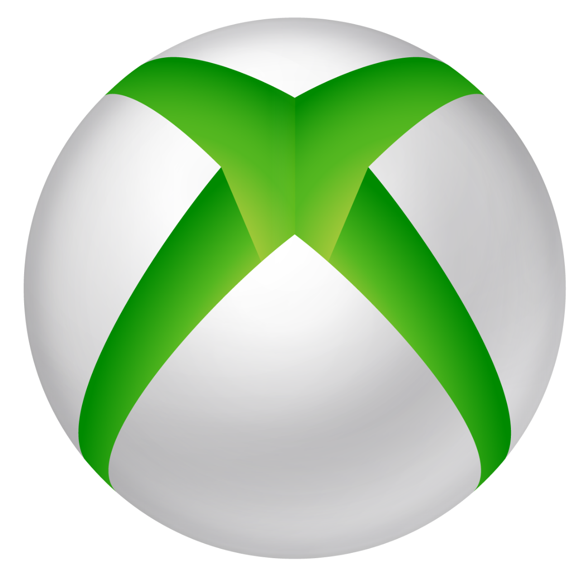

Co je Xbox?
Xbox je herní konzole vytvořená společností Microsoft.
Její součástí jsou domácí herní konzole, hry, streamovací služby, online služba Xbox network a vývojářská divize Xbox Game Studios.
Nejnovější představenou Xbox konzolí je Xbox Series X.


xbox series x
Microsoft Xbox Series X je optimalizována pro nastupující generaci her, ale zároveň je zajištěna zpětná kompatibilita s tisícovkami oblíbených her napříč čtyřmi generacemi starších konzolí. Vychutnejte si významné zkrácení načítání, vylepšenou grafiku v rozlišení 4K a vysokou frekvenci až 120 snímků za sekundu.